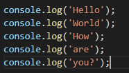
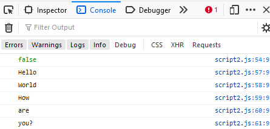
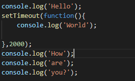
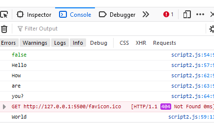
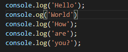
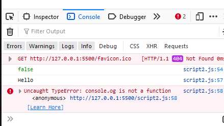
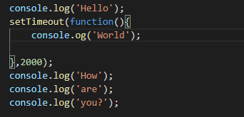
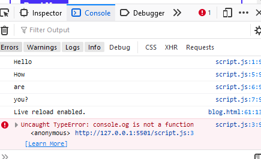

Since javascript is a single threaded language, asnychronousity helps us in performing task without blocking the flow of code. But before understanding what asnychronous javascript is, lets understand what does synchronous mean.
Running programs in a synchronous way means running the programs one after the other. For example there are 5 programs to run synchronously each progrsm will be executed one after the other. This means that the 5th program will be executed only after all the 4 programs are executed before it. Here's an example of a program in javascript;
 output;- Here we have console logged 5 times and the we got the output one after the other as we programmed. This was an example of snychronous code, where the code was executed as per the flow of the program.
Now let us come back to asnychronous part. Look at the code below:-
 output;- Here we delayed the 2nd console.log by 2 seconds using the setTimeout function.This was an example of asynchronous program, where the code was not executed one by one but the programme was delayed. Now what if we got an error? Lets have a look at the synchronous code;
 output Here we made a mistake and as you can see because of the error our flow of the program has been blocked as it is running synchronously. Now lets see how the asynchronous program handles the error;
 output;- Here due to the asynchronous nature of the code the program is not blocked and the further codes are executed.
But here comes an interesting question. What if we set our time to 0 instead of 2000ms(2s)? Have a look at this code below. You would have tthought that the code will execute immediately but it was still console logged at the end. Why is this happening? This is happening because the asynchronous program has been pushed to waiting que and will executed only after the rest of the code executes or if the call stack is empty it will push the asynchronous program to the call stack